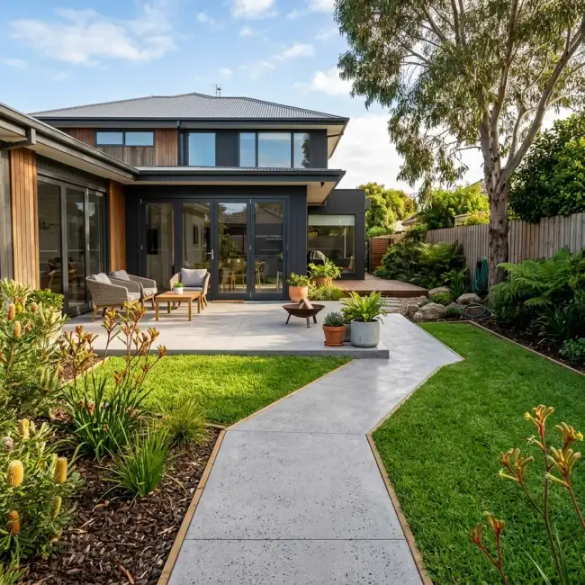

Concrete Driveway Contractors Gold Coast QLD
Looking for a licensed concrete driveway specialist on the Gold Coast? We design, pour, and seal high-durability residential and commercial driveways across Pimpama, Coomera, Ormeau, Robina, and Southport. Specialising in non-slip exposed aggregate driveways, covercrete driveway resurfacing, GCCC council crossovers, and plain concrete slabs.
Request a Free Driveway Quote
Fill out your details below and our Gold Coast estimator will contact you for a site measure.
Gold Coast Concrete Driveway Options

Exposed Aggregate Driveways
The gold standard for Gold Coast curb appeal. We expose natural granite, river pebble, and quartz stones under a washed slurry process, locking the surface with non-slip UV-stabilised acrylic sealers. Ideal for sloped blocks and coastal properties.
View Exposed Aggregate Guide →
Covercrete Spray-On Resurfacing
Got an old, oil-stained, or cracked driveway in Oxenford or Helensvale? Save thousands compared to full demolition. Our polymer covercrete spray overlays apply fresh charcoal fleck, tile stencils, or sandstone textures over your existing slab.
View Covercrete Guide →
Stencil & Stamped Concrete
Replicate the timeless look of cobblestone, ashlar slate, brick, or header borders without the weed growth of loose pavers. We apply paper stencils and dry-shake colour hardeners sealed for ultimate durability.
View Stencil Options →
Plain & Broom-Finish Driveways
Clean, cost-effective, and structural. Standard 100mm–125mm thick plain concrete with a non-slip broom texture or sponge finish. Perfect for rental properties, side vehicle access, and shed entry driveways in Ormeau and Yatala.
View Concrete Slabs Guide →5 Critical Risks When Pouring Driveways on Gold Coast Soil & Slopes
1. Reactive Black Clay Soil Heave (Pimpama 4209 & Ormeau 4208)
The northern Gold Coast corridor features reactive Class H1/H2 black clay. Wet weather expands clay, while summer droughts shrink it. We excavate 150mm deep, compact 100mm roadbase, and use SL72 steel mesh to prevent heaving cracks.
2. Steep Hillside Concrete Slumping (Pacific Pines 4211 & Oxenford)
Pouring high-slump wet concrete on steep hillside blocks results in wet mix sliding down the hill, leaving the top section thin and weak. We specify a stiff 80mm slump N32 mix and use heavy broom/exposed non-slip textures.
3. Coastal Salt Air & Steel Rebar Rust (Southport 4215 & Hope Island)
Airborne salt spray near the Broadwater corrodes unsealed concrete and internal steel rebar over time. We pour high-density N32 concrete mixes with low water ratios and seal with marine-grade acrylic sealers.
4. Illegal Kerb Inverts & Council Fines (GCCC VXO Permits)
Pouring unapproved concrete across public nature strips violates City of Gold Coast local laws. We handle full GCCC Vehicular Crossing (VXO) approvals, kerb saw-cuts, and Form 16 engineering clearance.
5. Shrinkage Cracking From Delayed Saw-Cutting
Queensland's sub-tropical heat causes rapid concrete hydration. If expansion joints are cut late, random shrinkage cracks appear. We saw-cut expansion control joints within 12–24 hours of pouring.
Gold Coast Driveway Specifications (AS 3727.1-2016)
"Controlling Concrete Slump & Expansion Joint Timing on Gold Coast Driveways"
"In my 15 years pouring driveways across the Gold Coast, the biggest mistake cheap contractors make is laying steel mesh flat on dirt without plastic bar chairs, or watering down concrete on hot summer days."
"Adding excess water lowers concrete MPA strength from 32MPa down to a weak 15MPa. We strictly enforce 80mm slump mix delivery, position SL72/SL82 mesh on 50mm bar chairs, and saw-cut expansion control joints within 12–24 hours to prevent random cracking."
Our 5-Step Gold Coast Driveway Construction Process
Site Earthworks
Excavating old slab & compacting 100mm roadbase sub-grade.
Formwork & Mesh
Setting timber formwork & SL72/SL82 steel mesh on chairs.
N25/N32 Concrete Pour
Pouring dense certified concrete & screeding to level fall.
Surface Wash & Finish
Washing aggregate slurry or applying broom/stencil finish.
Saw-Cuts & Sealer
Saw-cutting expansion joints & applying 2 coats UV sealer.
What Gold Coast Driveway Clients Say
"Replaced our steep plain concrete driveway in Pacific Pines with exposed aggregate. The non-slip grip during summer storms gives us complete confidence. Top quality job!"
Glenn H.
Homeowner, Pacific Pines"Resurfaced our cracked driveway in Coomera with covercrete stencilled tiles. Looks incredible and cost a fraction of tearing up the old slab."
Lisa & Mark P.
Homeowners, Coomera"Professional concreters from initial site measure to final saw cuts and clear sealing. Council crossover permit was approved smoothly."
Robert T.
Property Owner, HelensvaleGold Coast Concreting Suburbs We Cover
We construct concrete driveways across the entire Gold Coast corridor. Whether you are building in Coomera, Robina, Pimpama, or Southport, our local team is ready to quote.
Gold Coast Concrete Driveways FAQ
How thick should a residential concrete driveway be on the Gold Coast?
Under Australian Standard AS 3727.1-2016, standard passenger vehicle driveways on the Gold Coast must be a minimum of 100mm thick with SL72 steel mesh reinforcement laid on 50mm bar chairs over a 100mm compacted roadbase sub-grade. For heavy 4WDs, caravans, or steep sloped driveways in Pacific Pines or Oxenford, we pour 125mm–150mm thickness with N32 strength concrete.
Do I need a Gold Coast City Council (GCCC) permit for a driveway crossover?
Yes. The vehicular crossover (VXO)—the concrete section connecting your property boundary across the footpath/verge to the council road kerb—requires formal GCCC Vehicular Crossover approval. It must comply with GCCC Standard Drawings (minimum 125mm-150mm thick N32 concrete with kerb layback cut).
How do you prevent concrete driveways from cracking in reactive clay soils?
Northern Gold Coast suburbs like Pimpama (4209) and Ormeau (4208) feature reactive Class H1/H2 clay soils. We prevent slab cracking by excavating 150mm deep, compacting 100mm of roadbase, laying SL72/SL82 steel mesh on chairs, and saw-cutting expansion joints within 24 hours of pouring.
How long after pouring a new concrete driveway can I drive my car on it?
Foot traffic is permitted after 24–48 hours. Light passenger vehicles can drive on the new slab after 7 days (when concrete reaches ~70% of structural design strength). Heavy trucks, boats, and dual-axle caravans should wait 28 days for full 28MPa/32MPa curing.